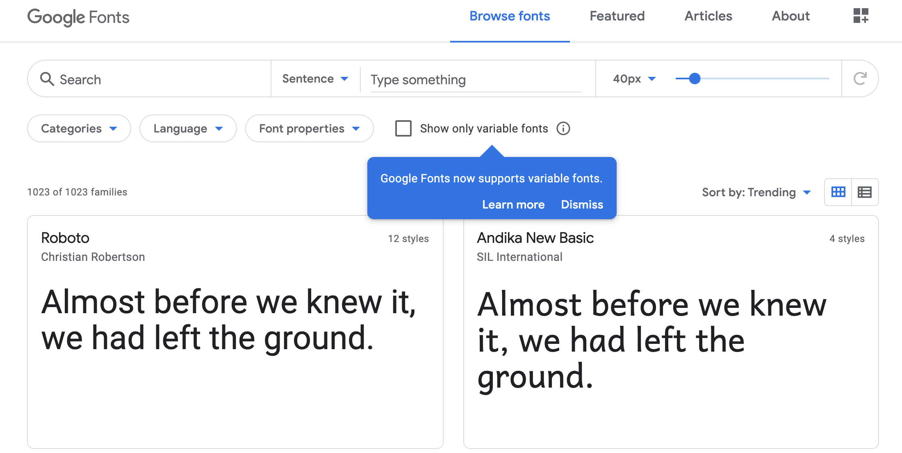
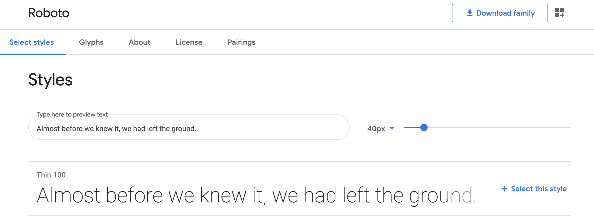
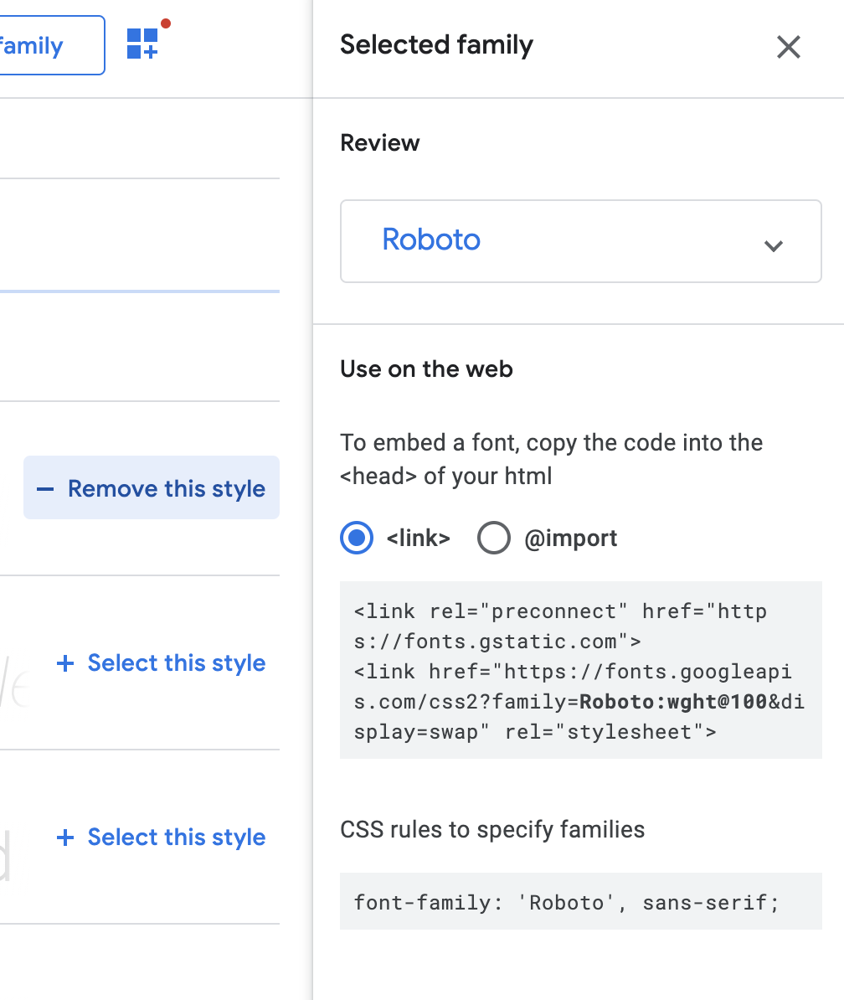

Web fonts are the use of fonts on the World Wide Web. When coding in CSS, a programmer can use web fonts to use specified fonts, which the users of the webpage will be able to see. Web fonts are useful because not every computer has the same exact fonts included in it.For instnace, Apple and Windows differ on what fonts they contain. Web fonts allow any user on any computer to see the website as it was intended to be with certain fonts.
Examples of different web fonts include...
Glyphs
Lato
Nerko One
Merriweather
Steps to use access web fonts
1. Go to fonts.google.com, or any other website of your choose that allows access to web fonts.

2. Search through all the different options of web fonts, and click on the "+" once you have choosen which font you like.

3. Click on the grey box on the bottom of the page, click on the "customize" button and choose the styles of font you would like to use.

4. The last step is to click on the "embed" bar, copy and paste the "embed font" code into your HTML file. The "specify in CSS" code should be in your CSS file.